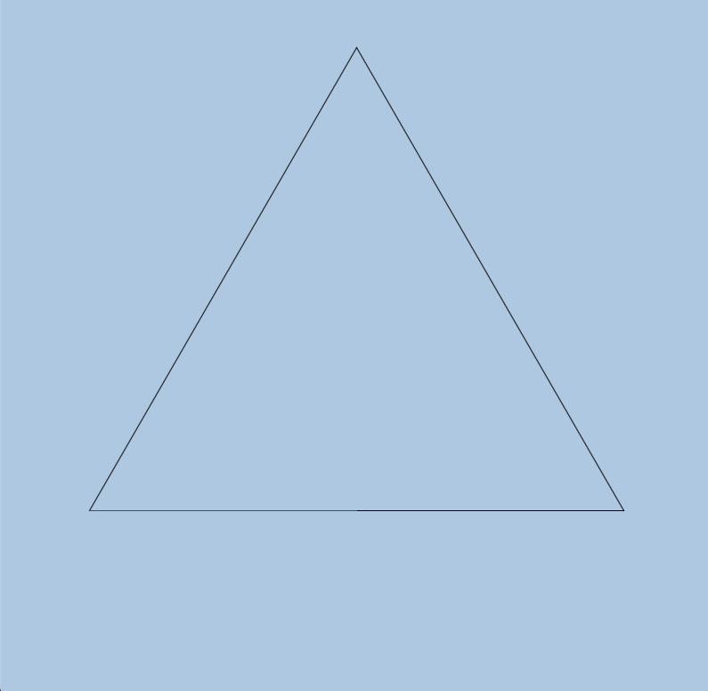
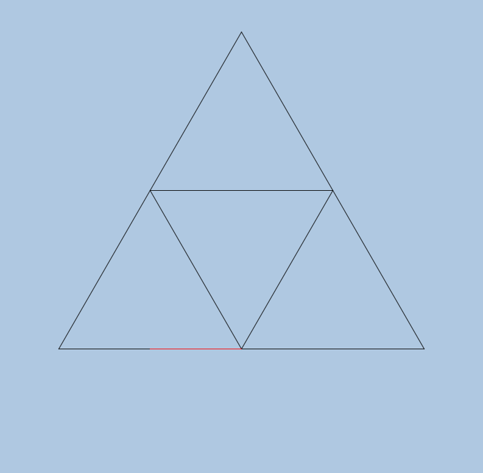
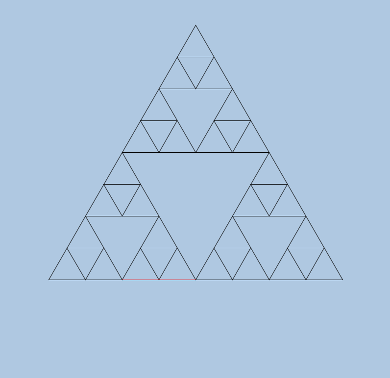
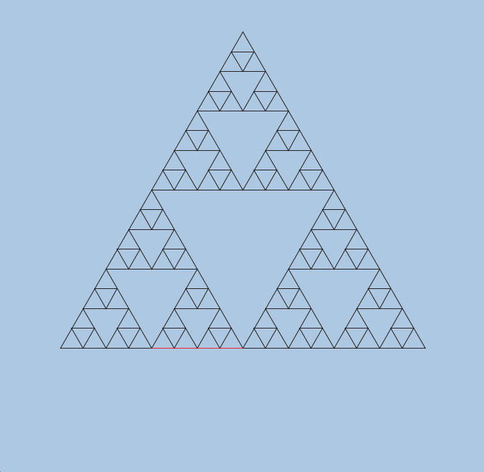
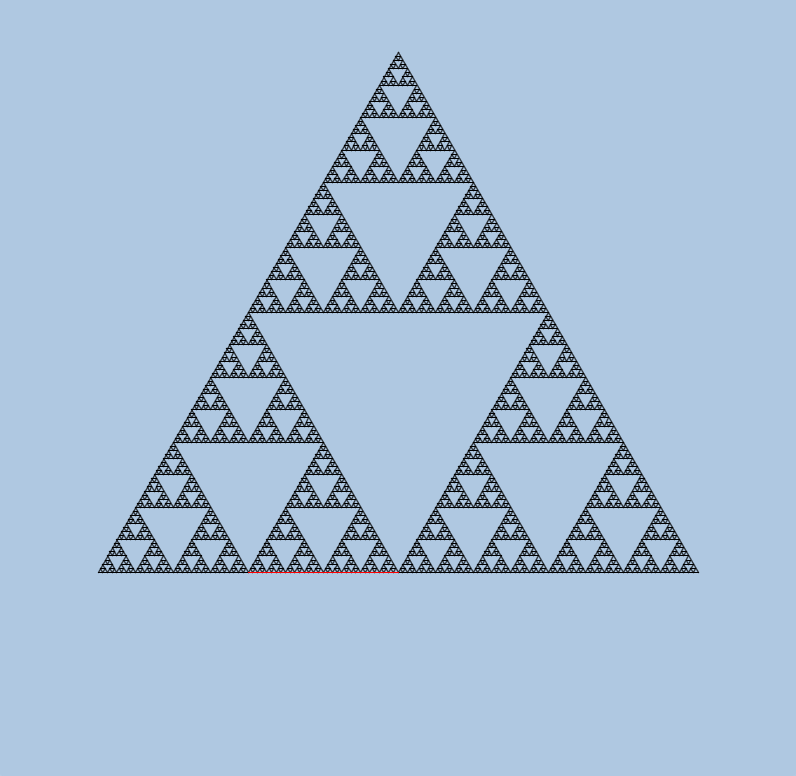

Drawing Sierpinski triangles
Now that you've written the code to implement the turtle graphics canvas, it's time to do something interesting with it! We are going to be drawing a well-known fractal shape called the Sierpinski triangle. Conceptually, it's a triangle with smaller triangles drawn inside it, and even smaller triangles drawn inside those triangles, ad infinitum. Of course, we can't draw triangles to infinite depth due to both computational and display limitations, but if we go enough levels deep, you wouldn't be able to distinguish the resulting images from a "real" Sierpinski triangle (whatever that is).
A good reference on Sierpinski triangles is this Wikipedia page. We will give you an algorithm for computing Sierpinski triangles below, so you won't need to consult the page for that.
What they look like
We will now present a gallery of images of the Sierpinski triangle at various "depths" of recursion. Smaller numbers mean that we stopped the recursive process earlier, while larger numbers mean that the recursive process ran on longer. Later drawings contain earlier drawings, but have more triangles filled in.
Note that there is one red line per image; this is the last line that was drawn.
Note
It's not necessary for your program to have the red line in the same location as our drawings do.
Depth 0

Depth 1

Depth 2

Depth 3

Depth 4

Depth 7

At this point, the Sierpinski triangle is basically complete from a visual standpoint. Notice the self-similarity of the image, where there are three smaller copies of the entire image embedded inside the image. This is what makes it a fractal.
How to generate them
There are undoubtedly many ways of generating Sierpinski triangles to any given (non-negative) depth. We will present a simple algorithm here, which we would like you to follow. The main reason we want you to follow our algorithm is to reduce frustration; making fractal drawings is awesome when the output is what you want it to be, but it can be extremely frustrating when it's a little bit wrong, especially since "a little bit wrong" at one level usually translates into "a giant mess" at a deeper level. (Also, we will be able to help you debug your code more easily if you follow our algorithm.)
We will assume that you have written the following methods:
-
triangleUp: this takes a single argument (the side length of a triangle) and draws an upward-pointing triangle. -
triangleDown: this takes a single argument (the side length of a triangle) and draws a downward-pointing triangle.
Both of these methods are only a few lines of code when using your turtle graphics canvas.
Here is pseudocode for the algorithm to draw a Sierpinski triangle
to depth n.
-
Draw an upward-pointing triangle using
triangleUpthat surrounds the entire Sierpinski triangle. This is the only upward-pointing triangle you will draw! All the rest will be downward-pointing triangles. (Look at the above images to convince yourself that this is reasonable.) -
If the drawing level
n(i.e. the depth) is zero, you are done! Otherwise, do the following steps:-
Draw a downward-facing triangle in the center of the drawing area so that it touches the edges of the surrounding triangle. We'll call this triangle the "core triangle" for this level.
-
Decrease the triangle size by a factor of 2. Subtract 1 from the level.
-
Now you have to repeat the entire drawing (not including the initial upward-facing triangle) in three places: in the triangular area above the core triangle, in the triangular area to its lower left, and in the triangular area to its lower right. (These are three recursive steps.) In each case, you first have to lift the turtle pen up, move to the correct place to start drawing, put the pen down, and do the drawing.
-
You should expect to do a bit of trial and error to get this right, but the working code is not long or convoluted. (Our solution for the recursive function is about 40 lines of code.)
Template code
We are supplying you with a template file for this section
called Sierpinski.java.
This contains the definitions of the Sierpinski class
and stubs or partial implementations for methods you need to write.
We've written // TODO comments where you need to add code
(and you should remove these comments when you do).
You can also add extra methods as you see fit.
Methods to write
The methods you need to write or complete are:
-
the
Sierpinskiconstructor -
the
triangleUpandtriangleDownmethods, both of which are very short -
the
drawInternalsmethod, which implements the recursive part of the drawing algorithm described above.
In the Sierpinski constructor, you need to create the turtle canvas,
set the background color
(any color that makes it easy to see the lines is OK),
draw the bounding upward-pointing triangle,
and call the drawInternals method to finish the drawing.